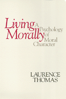

<body bgcolor="#FFFFFF" text="#000000" link="#0000FF" vlink="#CC0000" alink="#CC0000"><center><hr width="350" size="1" align="center" noshade>What constitutes a moral life? How does one acquire and maintain a good moral character?<hr width="350" size="1" align="center" noshade><p><a href="https://cdcshoppingcart.uchicago.edu/Cart/ChicagoBook.aspx?ISBN=9780877226024&&PRESS=temple" target="_top">Buy this book!</a> | <a href="https://cdcshoppingcart.uchicago.edu/Cart/Cart.aspx?PRESS=temple" target="_top">View Cart</a> | <a href="https://cdcshoppingcart.uchicago.edu/Cart/Cart.aspx?PRESS=temple" target="_top">Check Out</a></p><p></p></center><!--none//--><h1>Living Morally</h1>
<H2>A Psychology of Moral Character</H2>
<h3>Laurence Thomas</h3>
<P>cloth 0-87722-602-4 $34.95, Jun 89, <FONT COLOR=#990033>Out of Print</FONT>
<br>paper 0-87722-778-0 $35.95, Jun 90, <FONT COLOR=#990033>Available</FONT>
<BR> 278 pp
</P><BLOCKQUOTE><I>"[A] valuable contribution to the new literature in ethics on friendship and other caring relationships and on morally significant emotions...as well as to the classic issue of relationships between being happy and being virtuous."</I>
<br>&#151<b>Claudia Card</b><I></I></BLOCKQUOTE>
<p>Laurence Thomas addresses two main questions in this philosophical exploration of morality: What constitutes a moral life? How does one acquire and maintain a good moral character? In answering these questions, he maintains that social interaction is the thread from which the fabric of moral character is woven, and he promotes friendship and parental upbringing as the most important forms of social interaction.
<p>Thomas rejects the view now prominent in contemporary ethical theory that individuals are essentially self-interested. Instead he argues that a great deal of altruism can be found in the biological and psychological make-up of human beings. Thomas defends the view that sociobiology can serve as a basis for ethics. Regarding this "capacity for altruism" as a natural gift or talent, he observes that whether or not a quality flourishes is dependent upon the nature of one�s social environment. Thomas contends that within each person�s social environment, parental love, companion friendships, and our beliefs about how others will treat us provide the strongest encouragement for developing a good moral character.
<BR>&nbsp;<h2>Reviews</h2>
<p><I>"Instead of trying to generate or motivate altruism from considerations of self-interest, Thomas is concerned with its real, and its important human, origins and connections. Drawing on work from other fields-largely those in the social sciences&#151be is able to place it well within our experience and show its importance, both in itself and in its connections with much else that we know to be important. Thomas�s book takes up significant areas, too infrequently discussed, and helps us understand them. And it does this in a philosophically sensitive and astute way&#151showing not only philosophical skills and understanding, but also a humaneness and humanity too often missing in ethical writings."</I>
<br>&#151<b>Michael Stocker</b>, Guttag Professor in Ethics and Political Philosophy, Syracuse University
<p><I>"An elaborate and convincing argument. His aim is to offer a realistic characterization of the role of altruistic motivation in ethics.... Thomas builds a readable, original, and persuasive case."</I>
<br>&#151<b><I>Ethics</I></b>
<BR>&nbsp;<h2>Contents</h2><P>
<p>Preface
<p>1. Moral Character and Moral Theories
<br><I>Persons of Good Moral Character &#149
Moral Theory and Altruistic Motivations</I>
<p>2. The Biological Basis of Altruism
<br><I>Morality and Sociobiology &#149
Love: Transparent and Opaque &#149
Transparent Love and Natural Selection &#149
Love, Morality, and Self-Interest</I>
<p>3. Parental Love: A Social Basis for Morality
<br><I>The Freudian Moral Character &#149
Acquiring Altruistic Morality and Autonomy</I>
<p>4. An Account of Friendship
<br><I>The Character of Friendship &#149
Friendship: A Gloss on Aristotle &#149
Friendship and Romantic Love</I>
<p>5. Friendship: A Social Basis for Morality
<br><I>The Acquisition of Autonomous Altruism &#149
Friendship and Moral Self-Examination &#149
Moral Sensibilities</I>
<p>6. Character and Society
<br><I>The Psychology of the Platonic Conception &#149
Beliefs and Moral Reinforcement &#149
The Importance of Basic Trust</I>
<p>7. Living Well
<br><I>Self-Love &#149
The Natural Sentiments &#149
Psychic Harmony Realized &#149
Psychic Harmony: The Main Argument</I>
<p>8. The Damned
<br><I>Self-Esteem &#149
Kantian Morality and Self-Esteem</I>
<p>Bibliography
<br>Index
</P><BR>&nbsp;<H2>About the Author(s)</H2>
<P><b>Laurence Thomas</b> is Professor of Philosophy and an affiliate member of the Department of Political Science at Syracuse University.</P>
<BR><H2>Subject Categories</H2>
<p><A HREF="/tempress/philosophy.html" TARGET="_top">Philosophy and Ethics</a>
</p>
<p align="center"><a href="https://cdcshoppingcart.uchicago.edu/Cart/ChicagoBook.aspx?ISBN=9780877226024&&PRESS=temple" target="_top">Buy this book!</a> | <a href="https://cdcshoppingcart.uchicago.edu/Cart/Cart.aspx?PRESS=temple" target="_top">View Cart</a> | <a href="https://cdcshoppingcart.uchicago.edu/Cart/Cart.aspx?PRESS=temple" target="_top">Check Out</a></p><p><font face="Arial" size="1"><a href="copyright.html" onMouseOver="window.status='Web Copyright Policy';return true;" onMouseOut="window.status=''" title="Web Copyright Policy">&copy;</a> 2015 <a href="http://www.temple.edu" target="new" onMouseOver="window.status='Link to Temple University home page';return true;" onMouseOut="window.status=''" title="Link to Temple University home page">Temple University</a>. All Rights Reserved. http://www.temple.edu/tempress/titles/466_reg.html</font></p>